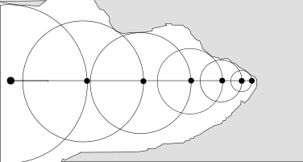

Each section is described in detail in the rest of the article:
The usual tricks are the usage of #define and typedef to drastically shorten the notation. Here, we have F=float, I=int, R=return, and O=operator. These are trivial to reverse.
Next is the V class which I renamed Vec (even though it is also used to store RGB float channels as we will see later).
struct Vec { float x, y, z; Vec(float v = 0) { x = y = z = v; } Vec(float a, float b, float c = 0) { x = a; y = b; z = c;} Vec operator+(Vec r) { return Vec(x + r.x, y + r.y, z + r.z); } Vec operator*(Vec r) { return Vec(x * r.x, y * r.y, z * r.z); } // dot product float operator%(Vec r) { return x * r.x + y * r.y + z * r.z; } // inverse square root Vec operator!() {return *this * (1 / sqrtf(*this % *this) );} };
Notice the absence of subtraction (-) operator so instead of writing "X = A - B", we will see "X = A + B * -1". The inverse square root is useful to normalize vectors later.
main() is the one symbol that cannot be obfuscated since it is called by libc's _start function. It is usually a good place to start working and a low hanging fruit. It took a bit of guessing from the first letter of the symbols, and a bit of fuzzing but I was able to get something readable.
int main() { int w = 960, h = 540, samplesCount = 16; Vec position(-22, 5, 25); Vec goal = !(Vec(-3, 4, 0) + position * -1); Vec left = !Vec(goal.z, 0, -goal.x) * (1. / w); // Cross-product to get the up vector Vec up(goal.y * left.z - goal.z * left.y, goal.z * left.x - goal.x * left.z, goal.x * left.y - goal.y * left.x); printf("P6 %d %d 255 ", w, h); for (int y = h; y--;) for (int x = w; x--;) { Vec color; for (int p = samplesCount; p--;) color = color + Trace(position, !(goal + left * (x - w / 2 + randomVal())+ up * (y - h / 2 + randomVal()))); // Reinhard tone mapping color = color * (1. / samplesCount) + 14. / 241; Vec o = color + 1; color = Vec(color.x / o.x, color.y / o.y, color.z / o.z) * 255; printf("%c%c%c", (int) color.x, (int) color.y, (int) color.z); } }
Notice how the float type literals have no "f" and how the fractional part is omitted in order to save space. The same trick is used later where the integer part is omitted (float x = .5). The "for" statement is also unusual with the iteration expression blended inside the stop condition.
This is a pretty standard main function for a raytracer/pathtracer. Camera vectors are defined and for each pixel, rays are cast. The difference between a raytracer and a path tracer is that in a path tracer, several rays are cast per pixel and they are slightly nudged at random. Then the color retrieved for each ray in a pixel is accumulated in three float R,B,G channels. At the end, the result is tone-mapped with Reinhard's method.
The most important part is the sampleCount which can be set to 1 to speedup rendition and iterate faster on hypothesis. Here are renditions with sample values ranging from 1 to 2048.
Another set of low hanging fruits are the utility functions. In this occurrence we have a trivial min() function, a random value [0,1] generator, and a much more interesting boxTest() which is part of the Constructive Solid Geometry (CSG) system used to carve the world. CSG is explained in the next section.
float min(float l, float r) { return l < r ? l : r; } float randomVal() { return (float) rand() / RAND_MAX; } // Rectangle CSG equation. Returns minimum signed distance from // space carved by lowerLeft vertex and opposite rectangle // vertex upperRight. float BoxTest(Vec position, Vec lowerLeft, Vec upperRight) { lowerLeft = position + lowerLeft * -1; upperRight = upperRight + position * -1; return -min( min( min(lowerLeft.x, upperRight.x), min(lowerLeft.y, upperRight.y) ), min(lowerLeft.z, upperRight.z)); }
There are no vertices in the code. Everything is done with CSG functions. If you are unfamiliar with them, let's just say that they are functions describing if a coordinate is inside or outside an object. If a function returns a positive distance, the point is inside the object. A negative distance indicates that the point is outside the object. There are many functions to describe many objects but for the sake of simplicity, let's take the example of a sphere and two points A and B.
// Signed distance point(p) to sphere(c,r) float testSphere(Vec p, Vec c, float r) { Vec delta = c - p; float distance = sqrtf(delta%delta); return radius - distance; } Vec A {4, 6}; Vec B {3, 2}; Vec C {4, 2}; float r = 2.; testSphere(A, C, r); // == -1 (outside) testSphere(B, C, r); // == 1 (inside)
The function testSphere() returns -1 for A (so it is outside) and 1 for B (so it is inside). Signing the distance is just a trick to provide two information instead of one with one value. The same type of function can be written to describe a 2D box (this is what is done in function BoxTest). Notice that to gain speed, an approximated distance is generated.

// Signed distance point(p) to Box(c1,c2) float testRectangle2D(Vec p, Vec c1, Vec c2) { c1 = p + c1 * -1; c2 = c2 + p * -1; return min( min(c1.x, c2.x), min(c1.y, c2.y)); } Vec A {3, 3}; Vec B {4, 6}; Vec C1 {2, 2}; Vec C2 {5, 4}; testRectangle2D(A, C1, C2); // 1.0 (inside) testRectangle2D(B, C1, C2); // -2.0 (outside)
Now look what happens if we reverse the sign of the return value.

// Signed distance point(p) to carved box(c1,c2) float testCarveBox2D(Vec p, Vec c1, Vec c2) { c1 = p + c1 * -1; c2 = c2 + p * -1; return -min( min(c1.x, c2.x), min(c1.y, c2.y)); } Vec A {3, 3}; Vec B {4, 6}; Vec C1 {2, 2}; Vec C2 {5, 4}; testCarveBox2D(A, C1, C2); // == -1.0 (outside) testCarveBox2D(B, C1, C2); // == 2.0 (inside)
Instead of describing a solid object, we have declared the whole world solid and instead carved a space inside it. Functions can be used as building blocks which once combined together describe more complex forms. With union operation (min function) we can carve two rectangles on top of each others and the result looks as follows.

// Signed distance point to room float testRoom2D(Vec p) { Vec C1 {2, 4}; Vec C2 {5, 2}; // Lower room Vec C3 {3, 5}; Vec C4 {4, 4}; // Upper room // min() is the union of the two carved volumes. return min(testCarvedBox2D(p, C1, C2), testCarvedBox2D(p, C3, C4)); } Vec A {3, 3}; Vec B {4, 6}; testRoom2D(A, C1, C2); // == -1.0 (outside) testRoom2D(B, C1, C2); // == 1.0 (inside)
If you start to think this looks like the room we are studying, it is because this is the way the lower room is expressed: with two simple carving boxes.
Now armed with expert knowledge of CSG, we can go back to the code and take a look at the database function which is the heaviest part to digest.
#define HIT_NONE 0 #define HIT_LETTER 1 #define HIT_WALL 2 #define HIT_SUN 3 // Sample the world using Signed Distance Fields. float QueryDatabase(Vec position, int &hitType) { float distance = 1e9; Vec f = position; // Flattened position (z=0) f.z = 0; char letters[15*4+1] = // 15 two points lines "5O5_" "5W9W" "5_9_" // P (without curve) "AOEO" "COC_" "A_E_" // I "IOQ_" "I_QO" // X "UOY_" "Y_]O" "WW[W" // A "aOa_" "aWeW" "a_e_" "cWiO"; // R (without curve) for (int i = 0; i < 60; i += 4) { Vec begin = Vec(letters[i] - 79, letters[i + 1] - 79) * .5; Vec e = Vec(letters[i + 2] - 79, letters[i + 3] - 79) * .5 + begin * -1; Vec o = f + (begin + e * min(-min((begin + f * -1) % e / (e % e), 0), 1) ) * -1; distance = min(distance, o % o); // compare squared distance. } distance = sqrtf(distance); // Get real distance, not square distance. // Two curves (for P and R in PixaR) with hard-coded locations. Vec curves[] = {Vec(-11, 6), Vec(11, 6)}; for (int i = 2; i--;) { Vec o = f + curves[i] * -1; distance = min(distance, o.x > 0 ? fabsf(sqrtf(o % o) - 2) : (o.y += o.y > 0 ? -2 : 2, sqrtf(o % o)) ); } distance = powf(powf(distance, 8) + powf(position.z, 8), .125) - .5; hitType = HIT_LETTER; float roomDist ; roomDist = min(// min(A,B) = Union with Constructive solid geometry //-min carves an empty space -min(// Lower room BoxTest(position, Vec(-30, -.5, -30), Vec(30, 18, 30)), // Upper room BoxTest(position, Vec(-25, 17, -25), Vec(25, 20, 25)) ), BoxTest( // Ceiling "planks" spaced 8 units apart. Vec(fmodf(fabsf(position.x), 8), position.y, position.z), Vec(1.5, 18.5, -25), Vec(6.5, 20, 25) ) ); if (roomDist < distance) distance = roomDist, hitType = HIT_WALL; float sun = 19.9 - position.y ; // Everything above 19.9 is light source. if (sun < distance)distance = sun, hitType = HIT_SUN; return distance; }
We recognize the "carving" box function which uses only two rectangles to build the whole room (our brain does the rest and imagines these are walls). The horizontal ladder is a slightly more complex CSG function involving a modulo. Finally the PIXAR letters are made of 15 lines with an origin/delta pair and two special cases for the curves in the P and R of PixaR.
With a database of CSG functions describing the world, all that has to be done is to march all the rays cast in main(). The ray marching is distance function assigned. This mean the sample position moves forward by the distance of the closest obstacle.
// Perform signed sphere marching // Returns hitType 0, 1, 2, or 3 and update hit position/normal int RayMarching(Vec origin, Vec direction, Vec &hitPos, Vec &hitNorm) { int hitType = HIT_NONE; int noHitCount = 0; float d; // distance from closest object in world. // Signed distance marching for (float total_d=0; total_d < 100; total_d += d) if ((d = QueryDatabase(hitPos = origin + direction * total_d, hitType)) < .01 || ++noHitCount > 99) return hitNorm = !Vec(QueryDatabase(hitPos + Vec(.01, 0), noHitCount) - d, QueryDatabase(hitPos + Vec(0, .01), noHitCount) - d, QueryDatabase(hitPos + Vec(0, 0, .01), noHitCount) - d) , hitType; // Weird return statement where a variable is also updated. return 0; }
The idea behind distance assisted ray marching is to move forward by the distance of the closest object. Ultimately the ray gets close enough to a surface that a hit point is declared.

Notice how ray marching does not returns an exact intersection with the surface but rather an approximation. This is why in the code we see marching stop when d < 0.01f.
We are almost done exploring the path tracer. We are missing the bridge which connects the main() function to the ray marcher. This last section which I renamed "Trace" is the "brain" where rays bounce or stop based on what they hit.
Vec Trace(Vec origin, Vec direction) { Vec sampledPosition, normal, color, attenuation = 1; Vec lightDirection(!Vec(.6, .6, 1)); // Directional light for (int bounceCount = 3; bounceCount--;) { int hitType = RayMarching(origin, direction, sampledPosition, normal); if (hitType == HIT_NONE) break; // No hit. This is over, return color. if (hitType == HIT_LETTER) { // Specular bounce on a letter. No color acc. direction = direction + normal * ( normal % direction * -2); origin = sampledPosition + direction * 0.1; attenuation = attenuation * 0.2; // Attenuation via distance traveled. } if (hitType == HIT_WALL) { // Wall hit uses color yellow? float incidence = normal % lightDirection; float p = 6.283185 * randomVal(); float c = randomVal(); float s = sqrtf(1 - c); float g = normal.z < 0 ? -1 : 1; float u = -1 / (g + normal.z); float v = normal.x * normal.y * u; direction = Vec(v, g + normal.y * normal.y * u, -normal.y) * (cosf(p) * s) + Vec(1 + g * normal.x * normal.x * u, g * v, -g * normal.x) * (sinf(p) * s) + normal * sqrtf(c); origin = sampledPosition + direction * .1; attenuation = attenuation * 0.2; if (incidence > 0 && RayMarching(sampledPosition + normal * .1, lightDirection, sampledPosition, normal) == HIT_SUN) color = color + attenuation * Vec(500, 400, 100) * incidence; } if (hitType == HIT_SUN) { // color = color + attenuation * Vec(50, 80, 100); break; // Sun Color } } return color; }
I played a little with this function to change the maximum number of allowed ray bounce. A value of "2" gives an oddly good looking varnished Vantablack[4] look to the letters.
To put it all together, here is the fully cleaned up source code here.
| ^ | [1] | Twitter post by lexfrench on Oct 8, 2018 |
| ^ | [2] | Wikipedia: NetPBM image format |
| ^ | [3] | Rendition performed on a maxed out MacBook Pro, 2017 |
| ^ | [4] | Wikipedia: Vantablack |